An idler, or roller, is a crucial component in a conveyor belt system that supports the belt and the material being transported. Positioned at intervals along the conveyor's frame, idlers help maintain belt stability, reduce sag, and prevent misalignment, all of which extend the belt's service life.
▪️ All plastic components manufactured to strict ISO quality standards.
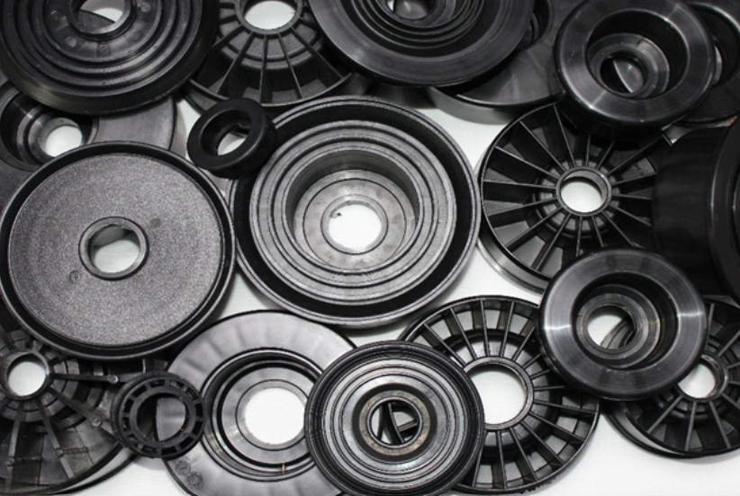
MS0042: 50mm Plastic Bearing Housing
MS0403: 89mm Plastic Bearing Housing for 20mm or 25mm Shaft
MS0007: 101mm Plastic Bearing Housing for 20mm or 25mm Shaft
MS0004: 127mm Plastic Bearing Housing for 25mm Shaft
MS0513: 127mm Fixed Face Plastic Bearing Housing for 25mm Shaft to Suit HDPE Pipe
MS0262: 127mm Fixed Face Plastic Bearing Housing for 20 or 25mm Shaft to Suit HDPE Pipe
MS0356: 127mm Fixed Face Polyprop Bearing Housing for 20 or 25mm Shaft to Suit Steel Pipe
MS0357/S: 25mm Rocker Seal to Suit MS0513 Housing
MS0505: 127mm Fixed Face Plastic Bearing Housing for 25mm Shaft to Suit Steel Pipe
MS0506: 25mm Rocker Seal to Suit MS0505 Housing
MS0185: 127mm Plastic Bearing Housing for 25mm Shaft to Suit HDPE Pipe
MS0501: 127mm Plastic Bearing Housing for 30mm Shaft
MS0008: 127mm Plastic Bearing Housing for 25mm Shaft to Suit HDPE Tube
MS0447: 114mm Plastic Bearing Housing for 25mm Shaft
MS0234: 25mm Lip Seal to Suit MS0447
MS0236: 152mm Plastic Bearing Housing for 25mm Shaft
MS0448: 152mm Plastic Bearing Housing for 30/35mm Shaft
MS0449: 30/35mm Rocker Seal to Suit MS0448 Housing
MS0457: 152mm Plastic Bearing Housing for 40mm Shaft to Suit Steel Pipe
MS0458: 40mm Rocker Seal to Suit MS0457
MS0543: HDPE Sleeve to suit 40 Shaft
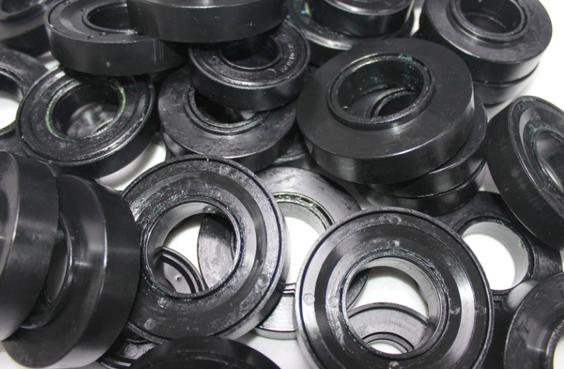
Conveyor labyrinth seals are an essential component for each roller. The different types of labyrinth seals prevent sand, dust, moisture etc. to enter the interior of the cushioning roller, but also extends the life of the roller.
20 Series to Fit a 20mm Shaft:
MS0171: 20mm Triple Labyrinth Seal
25 Series to Fit a 25mm Shaft:
MS0170: 25mm Triple Labyrinth Seal
MS0263: 25mm Double Labyrinth Seal
MS0241: 25mm 5-Part Labyrinth Seal
30 Series to Fit a 30mm Shaft:
MS0126: 30×72 Triple Labyrinth Seal
MS0483: 30×62 Triple Labyrinth Seal
35 Series to Fit a 35mm Shaft:
MS0127: 35mm Triple Labyrinth Seal
40 Series to Fit a 40mm Shaft:
MS0214: 40mm Triple Labyrinth Seal
60 Series to Fit a 60mm Shaft:
MS0437: 60mm Triple Labyrinth Seal
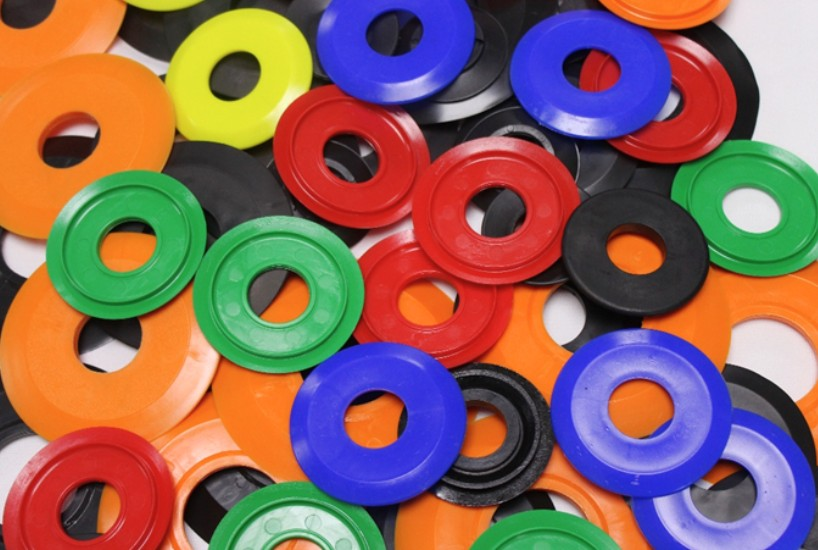
Dust covers in the mining industry serve as protective barriers for shafts and equipment, guarding against the ingress of dust, debris, and other contaminants. These covers help maintain the integrity of machinery components, prolonging their lifespan and ensuring optimal performance in rugged mining environments.
20 Series to Fit a 20mm Shaft:
MS0011: 20mm Soft PVC Dust Cover
MS0111: 20mm LDPE Dust Cover
25 Series to Fit a 25mm Shaft:
MS0010: 25mm Soft PVC Dust Cover
MS0110: 25mm LDPE Dust Cover
MS0135: 25mm Hard PVC Dust Cover
30 Series to Fit a 30mm Shaft:
MS0124: 30mm Dust Cover to Suit MS0126
MS0483/04: 30mm Dust Cover to Suit MS0483
35 Series to Fit a 35mm Shaft:
MS0125: 35mm Dust Cover
40 Series to Fit a 40mm Shaft:
MS0217: 40mm Hard PVC Dust Cover
60 Series to Fit a 60mm Shaft:
MS0438: 60mm Dust Cover to Suit MS0437
Customised designs and colours on request
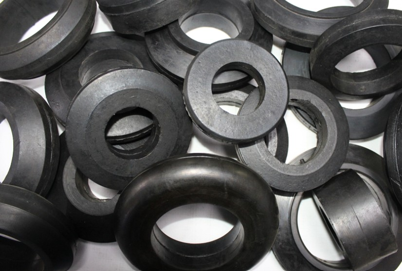
Precision Impact rubbers are installed on the roller shell, which significantly soften the impacts at the loading points on the conveyor belt. They also reduce vibration which allows for the extension of the bearing assembly and conveyor belt. It comprises of wear-resistant and shock-absorbing rubber.
MS0099/A: 108mm to Suit 57mm Pipe, 20mm Thickness
MS0100/A: 108mm to Suit 57mm Pipe, 50mm Thickness
MS0037/A: 133mm to Suit 57mm Pipe, 33.5mm Thickness
MS0425/A: 133mm to Suit 76mm Pipe, 33.5mm Thickness
MS0445/A: 133mm to Suit 89mm Pipe, 33.5mm Thickness
MS0375/A: 152mm to Suit 57mm Pipe, 48.5mm Thickness
MS0418/A: 152mm to Suit 76mm Pipe, 40.5mm Thickness
MS0419/A: 152mm to Suit 89mm Pipe, 40.5mm Thickness
MS0413/A: 152mm to Suit 101mm Pipe, 40.5mm Thickness
MS0407/A: 159mm to Suit 101mm Pipe, 40.5mm Thickness
MS0700/A: 150mm to Suit 90mm Pipe, 50mm Thickness
MS0701/A: 152mm to Suit 98mm Pipe, 50mm Thickness
MS0702/A: 152mm to Suit 110mm Pipe, 45mm Thickness
MS0703/A: 165mm to Suit 114mm Pipe, 40.5mm Thickness
MS0704/A: 178mm to Suit 95mm Pipe, 40.5mm Thickness
MS0705/A: 178mm to Suit 110mm Pipe, 40.5mm Thickness
MS0706/A: 178mm to Suit 114mm Pipe, 40.5mm Thickness
MS0707/A: 152mm to Suit 55mm pipe, 50mm Thickness
MS0708/A: 130mm to Suit 98mm pipe, 36mm thickness
MS0709/A: 133mm to Suit 101mm pipe, 45mm thickness
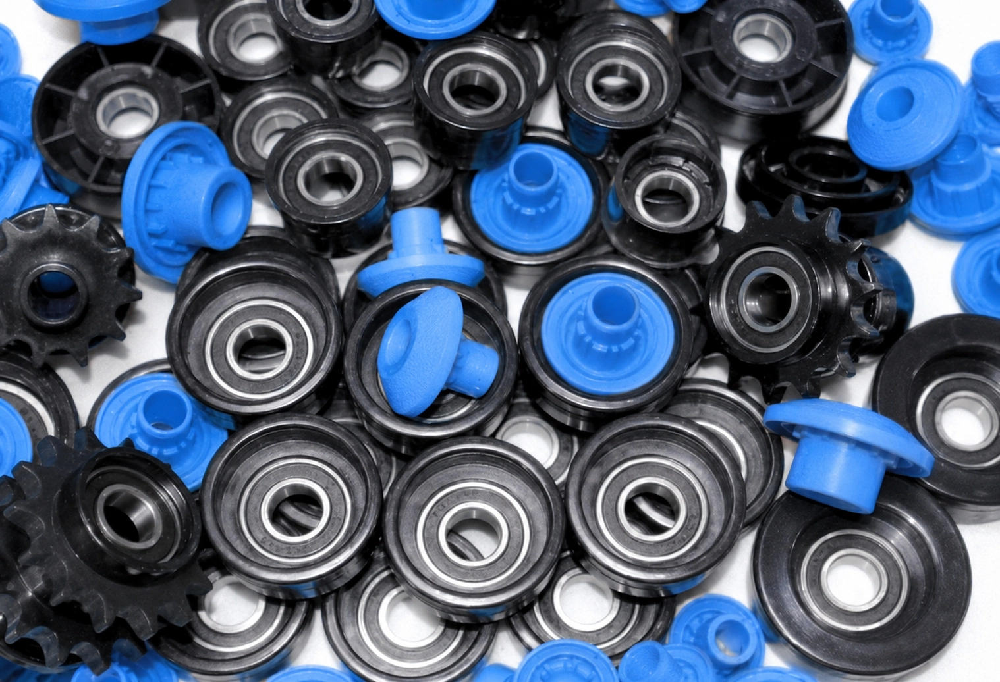
Gravity Roller Components are integral parts of conveyor systems in various industrial settings, including warehouses, distribution centres, and manufacturing plants, to move, streamlining, sorting and packing operations, transporting goods on assembly lines, loading and unloading trucks at loading docks.
These components typically include bearing housings with bearings to support conveyor rollers, along with seals for shaft protection. They facilitate the smooth movement of goods or materials along the conveyor line, relying of gravity repulsion. Gravity roller components are designed for durability, efficiency and ensuring reliable operation in material handling applications.
MS0397: 38mm Bearing Housing with 6002 2RS Bearing to Suit 1.6mm Tube
MS0398: 50mm Bearing Housing with 6002 2RS Bearing to Suit 2mm Tube
MS0399: 60mm Bearing Housing with 6002 2RS Bearing to Suit 2mm Tube
MS0400: 63mm Bearing Housing with 6002 2RS Bearing to Suit 2mm Tube
MS0401: 63.5mm Bearing Housing with 6204 2RS Bearing to Suit 2mm Tube
MS0402: 76mm Bearing Housing with 6005 2RS Bearing to Suit 2mm Tube
MS0426/8: 8mm Shaft Small Seal
MS0426/10: 10mm Shaft Small Seal
MS0426/12: 12mm Shaft Small Seal
MS0426/14: 14mm Shaft Small Seal
MS0427/8: 8mm Shaft Big Seal
MS0427/10: 10mm Shaft Big Seal
MS0427/12: 12mm Shaft Big Seal
MS0427/14: 14mm Shaft Big Seal
MS0428/16: 16mm Shaft Seal
MS0428/20: 20mm Shaft Seal
"Conveyor Idler Components are our speciality"
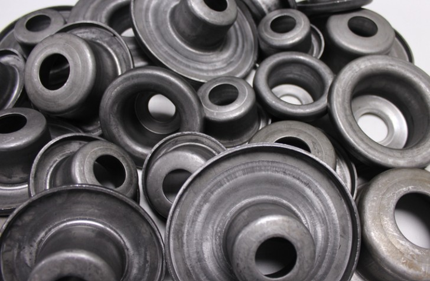
Steel end caps are used for conveyor rollers in heavy-duty applications to provide superior strength, durability, and impact resistance. The specific type of steel end cap depends on the environmental conditions and the required load capacity.
MS0498/A: 3 and a Half Inch to Suit 20 or 25mm Shaft Applications
MS0309/A: 4 Inch to Suit 20 or 25mm Shaft Applications
MS0368/A: 5 Inch to Suit 25mm Shaft Applications
MS0502/A: 5 Inch to Suit 30mm Shaft Applications
MS0430/A: 6 Inch to Suit 25mm Shaft Applications
MS0350/A: 6 Inch to Suit 30mm Shaft Applications
MS0500/A: 6 Inch to Suit 40mm Shaft Applications
MS0813: 182.2mm to Suit 30 or 35mm Shaft Applications
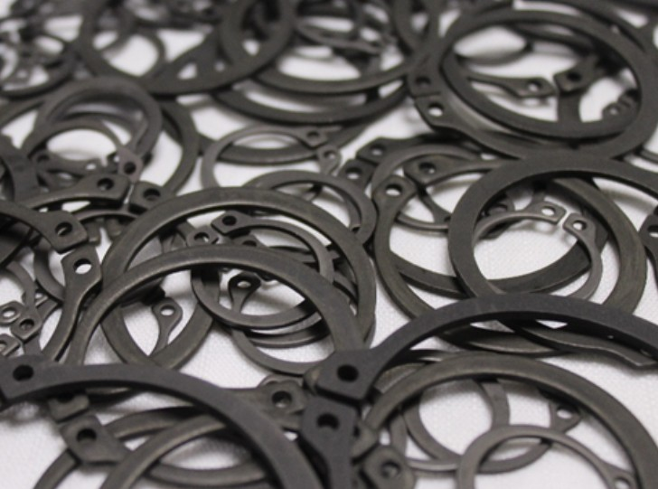
For conveyor rollers, an external circlip -also known as a snap ring or retaining ring - is used to securely hold components like bearings on a shaft.
It fits into a machined groove on the outer diameter of the shaft, preventing lateral movement and enabling parts to rotate smoothly.
20 Series for 20mm Shaft
25 Series for 25mm Shaft
30 Series for 30mm Shaft
35 Series for 35mm Shaft
40 Series for 40mm Shaft
60 Series for 60mm Shaft
Various sizes on request
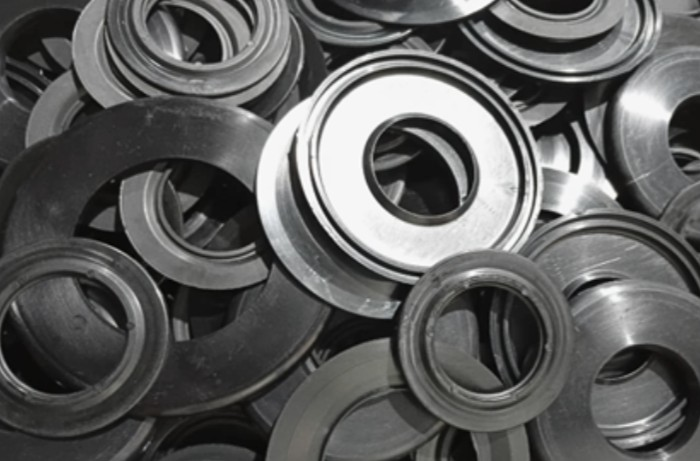
They are used when sealed bearings are not used to keep the grease from running out the bearing when the rollers get hot.
MS0153: 25×52 Grease Retainer
MS0101: 25×72 Grease Retainer
MS0429: 30×72 Grease Retainer
MS0406: 40×90 Grease Retainer
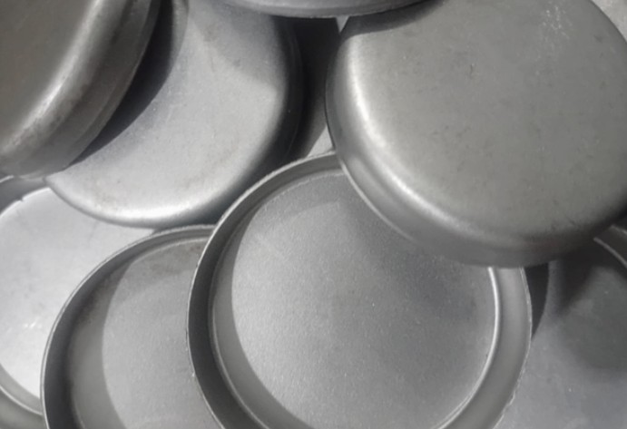
Steel Welsh plugs are manufactured from high quality automotive steel and are used to cover the outer ends of the conveyor frame.
Welsh 52: 52mm Steel Welsh Plug
Welsh 76: 76mm Steel Welsh Plug
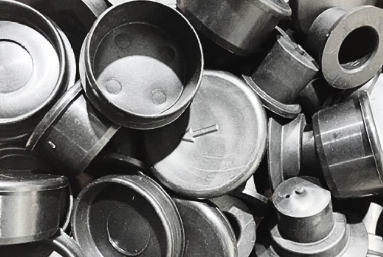
PVC Hats are used to increase the shaft size from 25mm to 30mm. They are used when clients do not want to replace their 30mm slotted brackets. Polypropylene plugs are used to cap off the ends of the tube frames or blank off one side of a roller, a typical example would be a weighbridge.
MS0012: Hard PVC Hat
MS0343: 52mm Small Polypropylene Plug
MS0342: 69mm Large Polypropylene Plug
MS0392: 55mm Large Polypropylene Plug
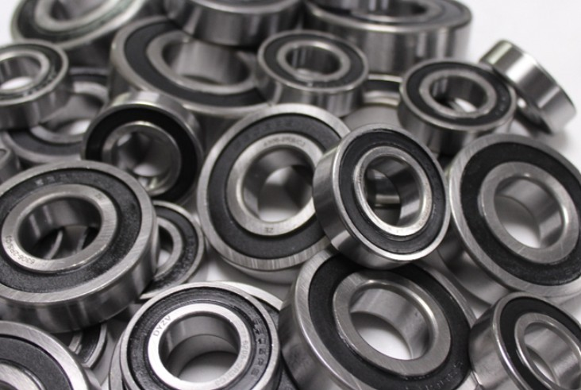
Conveyor idler bearings allow the rollers in a conveyor system to rotate smoothly, handling the system's load and speed. Selecting the right type depends on factors like the expected load, speed, and operating environment.
6304 2RS C3 for 20mm Shaft
6205 2RS C3 for 25mm Shaft
6306 2RS C3 for 30mm Shaft
6207 2RS C3 for 35mm Shaft
6308 2RS C3 for 40mm Shaft
6312 2RS C3 for 60mm Shaft
Various sizes on request


LEVEL 1 BB-BEE CONTRIBUTOR
FOLLOW US ON SOCIAL MEDIA: